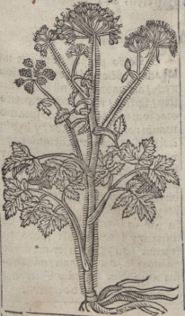

Борщівни́к (Heracleum) — рід дво- та багаторічних трав'янистих рослин родини парасолькових. Відомо понад 80 видів борщівників, які ростуть у помірній зоні північної півкулі, і в горах тропіків Африки й Південно-Східної Азії. В Україні можна зустріти 8 видів. На території України набув значення Борщівник Сосновського, як карантинна отруйна рослина яку легковажно завезли з часів СРСР як силосну культуру, на території Європи поширення також набув отруйний Борщівник Мантегацці який розводився як декоративна садова рослина, але теж перейшов у неконтрольоване поширення.
Серед борщівників є їстівні рослини, наприклад, сибірський борщівник, який згодом втратив своє кулінарне значення як їстівний вид ввиду легкості схрещування з занесеними отруйними видами борщівника, легкості створення міжвидових гібридів, важкості їхнього розрізнення. Сік отруйних борщівників викликає підвищення чутливості шкіри до УФ спектру сонячного світла чи більш довгохвильового випромінювання, викликає гіперпігментацію, опіки шкіри, такий фотосенсибілізувальний ефект виявляється при зовнішньому впливі фурокумаринів[1].
Окрім опіків, сік борщівника здатний викликати дерматити, які часто називають "опіками". Були відзначені випадки таких дерматозів — до III ступеня, а також навіть летальні випадки у дітей молодшого віку від численних опіків шкіри. Особливо небезпечний сік борщівника при попаданні в очі, він може спричинити сліпоту. Є багато випадків втрати зору дітьми, які використовували порожнисте стебло рослини подібно телескопу чи трубки для "плювання"
У деяких борщівників гігантський вигляд, тому вони отримали назву гераклеум (лат. Heracleum), на честь Геракла (Геркулеса), міфічного героя Давньої Греції. Часто, великі види борщівника так і відокремлюють в одну групу — Гігантські борщівники (англ. Giant Hogweeds). В гігантських борщівників стебла високі, порожнисті, листки великі пальчасто-розсічені.
Розповсюдження в Україні
- Борщівник сибірський (Heracleum sibiricum) — найпоширеніший (майже по всій Україні — на луках, на берегах річок, біля доріг)
- Борщівник карпатський (Heracleum carpaticum) — у Карпатах
- Борщівник європейський (Heracleum sphondylium) — у Карпатах
- Борщівник пухнастий (Heracleum pubescens) — у південному Криму, включений до Червоної книги України
- Борщівник Стевена (Heracleum steveni) — у Криму
- Борщівник морквяницелистий (Heracleum ligusticifolium M.Bieb.)[3] — рідкісний, охороняється Червоною книгою України росте у Криму.
- Heracleum mantegazzianum — борщівник родом із Кавказу, інтродуцент в Україні
- Борщівник Сосновського (Heracleum sosnowskyi) — карантинний інвазивний вид, загальнорозповсюджений. Його почали сіяти на території нашої країни після закінчення Другої світової війни. Вважалося, що це буде найдешевший та доступний корм для худоби. Проте молоко, яке давали свійські тварини, було гірким. Тому в аграрії вирішили відмовитися від цієї ідеї [1] [Архівовано 24 грудня 2020 у Wayback Machine.]
Опис
Борщівник має шорстке з гранями стебло заввишки 1,5 — 2 метрів і перистоскладні шорсткі листки, що складаються з трьох-семи овальних листочків[4]. Черешки листя біля основи охоплені піхвою у вигляді роздутого мішка. Цвіте він у червні — липні. Суцвіття утворює складну багатопроменеву парасолю. Цвіте із самого ранку до пізнього вечора, орієнтовна медопродуктивність 300 кг/га.[5]
Ботанічний опис
Борщівник — переважно однорічна, рідше багаторічна трав'яна рослина. Стебла у різних видів підносяться на різну висоту — від 20-50 см до 3-4 м; як правило, вони порожні. Листя зібрані в прикореневу розетку, довгочерешкові, в гігантських борщівників дуже великі, можуть бути двох-, трьох- або перисто-роздільними, з сегментами різної форми. Квітки дрібні, білі, рідше зеленувато-жовті або яскраво-рожеві, зібрані в складні парасольки до 40 см в діаметрі. Зацвітає більшість видів в червні, але триває цвітіння у різних видів до липня — серпня. Плід — двосім'янка — вислоплідник. Насіння дозріває в липні — вересні, легко обсипається.
Назва
У староукраїнській мові борщівник називався словом "борщъ" чи "боръщъ" (борщ).[6] Для слов'янських форм слова «борщ» значення «борщівник» первісне, потім «юшка з борщівника» і нарешті, спочатку лише в українській мові, «юшка, суп з буряка і капусти»[7] (сучасний борщ).
У староукраїнській мові борщівник називався словом "борщъ" чи "боръщъ" (борщ).[6] Для слов'янських форм слова «борщ» значення «борщівник» первісне, потім «юшка з борщівника» і нарешті, спочатку лише в українській мові, «юшка, суп з буряка і капусти»[7] (сучасний борщ).
У староукраїнській мові борщівник називався словом "борщъ" чи "боръщъ" (борщ).[6] Для слов'янських форм слова «борщ» значення «борщівник» первісне, потім «юшка з борщівника» і нарешті, спочатку лише в українській мові, «юшка, суп з буряка і капусти»[7] (сучасний борщ).
У староукраїнській мові борщівник називався словом "борщъ" чи "боръщъ" (борщ).[6] Для слов'янських форм слова «борщ» значення «борщівник» первісне, потім «юшка з борщівника» і нарешті, спочатку лише в українській мові, «юшка, суп з буряка і капусти»[7] (сучасний борщ).
Цінний медонос
Борщівник зацвітає на початку літа, одночасно з лісовою малиною. Обніжжя яскраво-жовтого кольору. Якщо стоїть несприятлива погода, зацвітає значно пізніше. Забирати бджіл треба скоріше, аніж борщівник закінчить квітнути. Фаза цвітіння — 18-35 діб. З одного гектару посівних площ борщівника можна одержати до 250 кілограмів меду. Найактивніше бджоли відвідують квітки з 6-ї до 12-ї години, у фазі повного його цвітіння.
З початком цвітіння підвозять пасіки ближче до посівів. Нектар рідкий, тому бджоли переробляють його набагато довше, ніж інші сорти меду. Тому бджолам надають більше стільників. Працювати на цвітінні борщівника можуть тільки сильні сім'ї, тому що під час збору нектару спостерігається помітне зношування бджіл. Сім'ї мають велику кількість розплоду.
Мед, отриманий з бощівника, густий, бурштинового кольору, із сильними приємними ароматом і смаком.
Посів насіння проводять восени, за 15-20 днів до замерзання ґрунту, використовуючи широкорядний спосіб. Відстань між рядами — 70 сантиметрів. Глибина закладення насіння — до двох сантиметрів. На одному місці борщівник росте 6 - 8 років.
Застосування в їжу
Окремі види борщівника здавна вживали в їжу. Наразі, як їжа для людини не збирається, потенційно їстівні борщівники майже не використовуються з причини схожості з токсичними видами борщівників та створення з ними проміжних гібридів різного ступеню токсичності.
Молоде листя збирали для салату; зі стебел і більшого старого листя варять щі та роблять пюре.[4] Відвар борщівника нагадує курячий росіл, а ніжні листки схожі смаком на моркву[4]. Кореневище борщівника може замінити коренеплоди: воно солодке, тому що містить багато цукру[4]. У Росії борщівник квасили для готування щів так само, як і капусту[8].
Польський ботанік Шимон Сиренський[pl] писав у своєму "Зільнику" (1613):[9][10]
